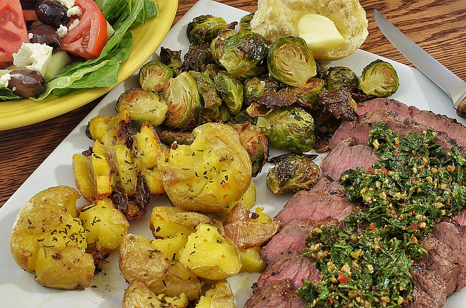

Dinner, Protein, Prep, By Claude
2 lb flank steak (or skirt steak / sirloin flap)
2 lb baby potatoes, halved
1 1/2 tablespoons olive oil (for potatoes)
1 teaspoon kosher salt, plus more for steak
Steak marinade
3 garlic cloves, grated
1 tablespoon olive oil
1 lime, juiced
1 teaspoon ground cumin
1 teaspoon kosher salt
1/2 teaspoon black pepper
Chimichurri (about 1 cup)
1 packed cup flat-leaf parsley, finely chopped
1/4 cup fresh oregano leaves, chopped (or 1 tbsp dried)
4 garlic cloves, minced
1 small shallot, minced
1/3 cup red wine vinegar
1/3 cup extra virgin olive oil
2 tablespoons water
1/2 teaspoon red pepper flakes
1/2 teaspoon kosher salt
This chimichurri uses more herbs and vinegar and less oil than usual, so it's lighter but still bright. Make a double batch: it keeps a week and also works on chicken, eggs, pork, and potatoes. Freeze the steak in its marinade in portions, then sear for 10 minutes on the night you eat it.
Chimichurri: stir together everything except the oil, let it sit 10 minutes, then stir in the oil. Refrigerate up to 1 week, and bring to room temperature before serving.
Steak: rub the marinade over the steak. Refrigerate 2–24 hours, or cut into 2 portions, bag, and freeze. Thaw overnight in the fridge.
Potatoes (can be batched ahead): toss with oil and salt, then roast cut-side down at 425°F for 25–30 minutes until deeply browned.
Cook: pat the steak dry. Heat a cast-iron skillet over high until it's smoking, or heat the broiler. Sear 4–5 minutes per side to 130°F for medium-rare.
Rest 5–10 minutes, then slice thinly across the grain. Serve over the potatoes with about 2 tablespoons chimichurri per serving.
Slicing across the grain matters with flank steak. If you slice with the grain it will be chewy whatever the doneness.
~540 CALORIES
41G PROTEIN
25G FAT
33G CARBS
4G FIBER
Photo: Flat iron steak with chimichurri (9680394407).jpg by jeffreyw, CC BY 2.0, via Wikimedia Commons. Representative image, not this exact recipe.
.jpg){kind=link}